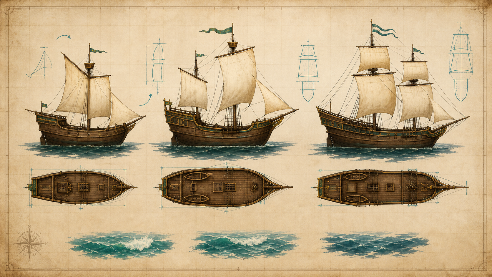
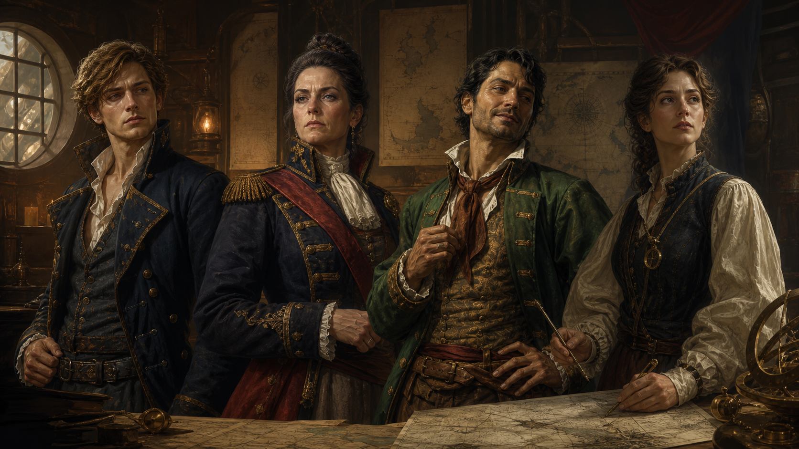

1. 원작 구조 조사 요약
조사 기준작은 1993년 PC-98로 출시되고 1995년 DOS판이 존재한 Uncharted Waters: New Horizons / 대항해시대 II다. 공개 자료상 이 게임은 여섯 주인공 중 하나를 고르고, 각기 다른 목적과 얽히는 플롯으로 16세기 항해·교역·탐험을 진행한다. 해상에서는 바람과 해류, 선원 상태가 이동에 영향을 주고, 항구에서는 여관·조선소·상점·길드·궁정 등 시설을 이용한다. 돈은 교역, 길드 의뢰, 도박, 해전으로 벌며, 전투는 턴제 함대전과 선장 결투로 전환된다.
| 분석 항목 | 관찰된 설계 | 본 프로젝트 변형 |
|---|---|---|
| 주인공 선택 | 여섯 시나리오, 성향별 목표 | 네 선장부터 시작, 동일 세계 사건을 다른 각도에서 해석 |
| 성장 축 | 무역·해적·모험 명성 | 교역·전투·탐험·항구 신뢰로 확장 |
| 항해 | 탑다운 바다 이동, 바람/해류/보급 | 가로형 바다 지도에서 선회·돛 힘·풍향을 체감 |
| 항구 루프 | 시설별 경제·수리·고용·정보 | 항구마다 사건, 시장 가격, 신뢰도, 고용 가능 인물이 변동 |
| 전투 | 턴제 포격/백병/결투 | 프로토타입은 항해와 사건 중심, 이후 전투 장면은 별도 전환 |
2. 독립 기획 방향
기획명: 수평선의 장부 / Horizon Ledger
로그라인: 왕실과 대형 해운회사가 독점한 항로 장부 때문에 항구들이 굶주리기 시작한다. 네 명의 선장은 명예, 복수, 빚, 지식이라는 각자의 이유로 바다에 나서지만, 결국 “누가 세계의 길을 소유하는가”라는 하나의 질문 앞에 모인다.
핵심 플레이 약속: 플레이어는 특정 선장을 선택해 시작하고, 바다를 직접 항해하며 항구 사건을 열고, 교역과 탐험으로 명성을 쌓는다. 같은 사건도 선장에 따라 대사와 보상이 다르다.

3. 선택 선장과 정밀 스토리라인

리안 팔코
탐험 몰락 귀족의 항해 견습생. 아버지의 누명을 벗기려 항해 일지의 마지막 쪽을 찾는다.
1막: 왕립 조선소에서 압수당할 뻔한 해도를 들고 탈출한다. 2막: 두 번째 일몰이 실제 천문현상이 아니라 해류 암호임을 발견한다. 3막: 무풍대 반란을 설득으로 해결하며 지휘관이 된다. 4막: 장부가 항해자를 배제하는 보험 사기 문서였음을 안다. 5막: 장부 공개 여부를 선택한다.
세레나 아란트
전투 추방된 해군 장교. 가족을 죽인 조작 명령의 발신자를 쫓는다.
1막: 가족의 난파 현장에서 해군 포탄 파편을 찾는다. 2막: 해적기를 단 왕실 보급선을 나포한다. 3막: 복수와 민간 보호 사이에서 명성 방향이 갈린다. 4막: 검은 성단 해운회사의 전쟁 보험 사기를 밝힌다. 5막: 사략 면장을 찢고 독립 호위 함대를 세운다.
마르코 칸토
교역 빚진 보물 사냥꾼. 돈을 좇다가 항구 독점권 음모에 닿는다.
1막: 채권자에게 쫓기며 후원자의 감시 임무를 받는다. 2막: 후추와 유리 교역으로 첫 루프를 학습한다. 3막: 성물 장부가 전쟁 물자 선적표임을 알아낸다. 4막: 손해를 감수하고 난민선을 호송한다. 5막: 독점 계약을 공개해 빚 자체를 무효화한다.
엘린 보레알
탐험 지도학자. 완성된 지도가 자유의 도구인지 지배의 도구인지 묻는다.
1막: 후원자의 독점 계약을 의심하며 출항한다. 2막: 지도에 오르길 두려워하는 안개의 항구를 만난다. 3막: 현지 조종사의 구전 해도를 배운다. 4막: 왕실이 고의로 지운 항구를 발견한다. 5막: 주민이 갱신하는 살아있는 지도를 만든다.
4. 시스템 설계
| 시스템 | 설계 |
|---|---|
| 가로형 항해 | 좌우로 넓게 펼쳐진 해역에서 선박이 회전하고 전진한다. 풍향은 약하게 계속 변해 항해가 정적인 이동이 되지 않게 한다. |
| 명성 해금 | 교역 이익, 발견 수, 전투 승리, 항구 신뢰가 사건 트리의 조건이 된다. 프로토타입은 항구 상호작용으로 장면을 진행한다. |
| 항구 | 항구는 수리·교역·고용·소문·투자의 묶음이다. 항구 신뢰가 높으면 세금이 낮아지고 고급 정보가 열린다. |
| 선원 | 항해·감시·전투 배치로 나뉜다. 초기 구현은 데이터 설계, 이후 UI와 전투에서 반영한다. |
| 음악 | 원작 음악의 특정 선율은 쓰지 않고, 류트풍 아르페지오, 낮은 현 드론, 잔잔한 파도 리듬으로 항해감을 만든다. |
5. 개발 범위
첫 번째 플레이 가능 빌드는 리안 팔코의 15~20분 프롤로그를 구현한다. 타이틀과 선장 선택에서 시작해 벨라 항의 보급·시장·조선소·여관·길드·서점, 풍향과 사행을 이용한 측면 항해, 표류 상선 선택 사건, 제노아의 유리·소금 교역, 두 번째 일몰 단서, 왕립 추적선 탈출, 프롤로그 완료까지 한 흐름으로 진행된다.
| 구현 항목 | 현재 빌드 |
|---|---|
| 화면 | 타이틀, 선장 선택, 항구, 시장, 시설, 항해, 사건 대화, 설정, 저장, 완료 화면 |
| 항해 | 돛 4단계, 변화하는 풍향, 좌·우 사행, 속도 효율, 보급 소비, 피로, 미니 해도 |
| 경제 | 5종 교역품, 항구별 매입·매도 가격과 재고, 12칸 화물 용량, 보급품 구매 |
| 진행 | 데이터 기반 사건 9개, 구조 분기, 명성·신뢰 보상, 자동 저장과 수동 슬롯 3개 |
| 시청각 | 벨라·제노아·항해 배경, 리안 초상, 새벽까마귀 선박, 장면별 음악과 행동 효과음 |
다음 개발 순서는 세부 가격 변동, 선원 고용과 배치, 발견물 도감, 턴제 함대전, 선장 결투, 나머지 세 선장의 프롤로그다.
6. 참고 출처
- MobyGames: New Horizons - 출시 플랫폼, 여섯 주인공, 항해/항구/전투 구조 설명.
- Koei Tecmo Wiki: Uncharted Waters: New Horizons - 명성 분류, 항구 시설, 선원 역할, 결투 구조 요약.
- SNESmusic: Uncharted Waters: New Horizons - 작곡가와 트랙 성격 참고. 본 프로젝트 음악은 새로 생성한 오리지널 리소스.
- Uncharted Waters manual text - 초기작의 항구, 항해, 명성, 해전 매뉴얼 구조 참고.